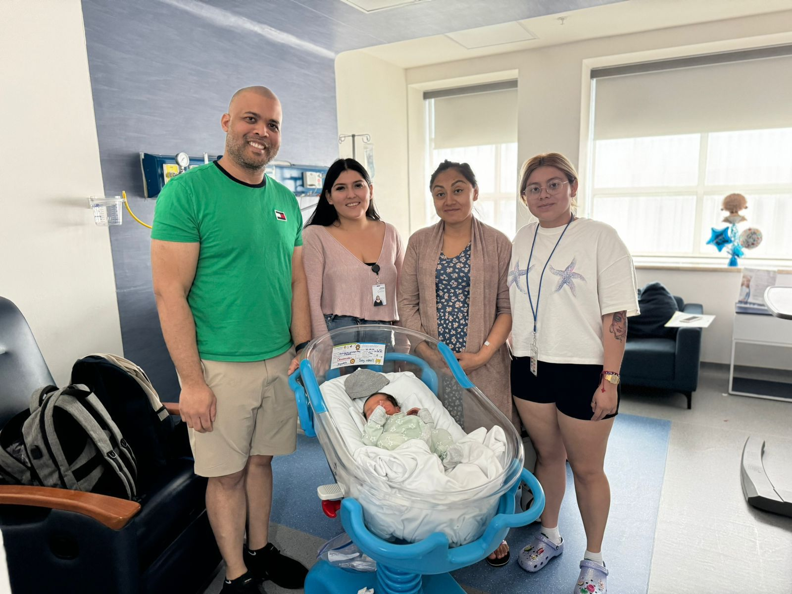
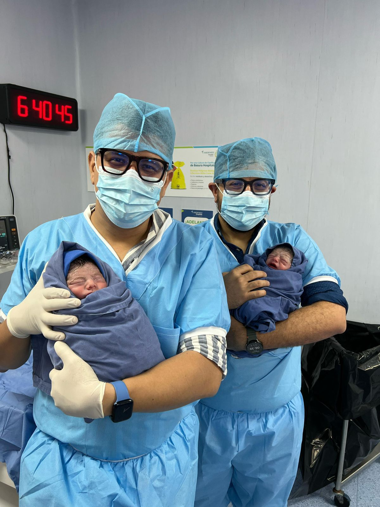
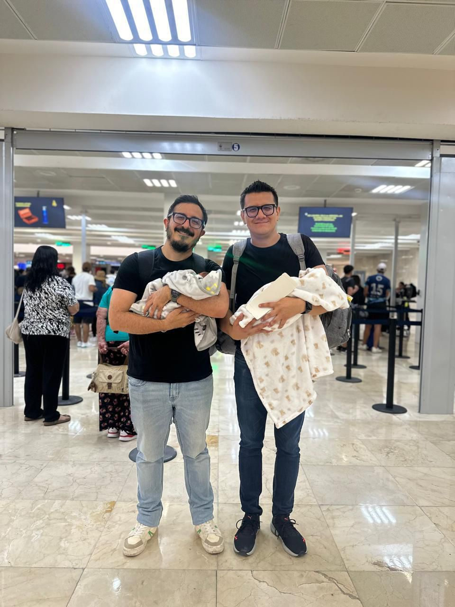

FSC was built by the professionals already working inside these programs — coordinators, lawyers in family court, medical teams in Cancún. Not consultants. Not investors. The people who actually do the work.
Before FSC existed, we were already in this field. Our coordinators were managing programs from the first appointment to the day of delivery. Our lawyers were appearing in family court — not reviewing paperwork after the fact, but doing the legal work that makes parenthood official.
We were the ones solving the problems that came up at 11pm. The ones who knew what to file in the morning. The ones a family could actually reach when something needed to be resolved.
What we saw, from that position, was a commercial distance being placed between intended parents and the professionals working their case. An agency layer that filtered access, managed information, and charged families for guidance that should have been theirs directly.
We founded FSC to remove that distance. Not as a service model — as a principle.

"There is a difference between an agency that manages your case and a team that is inside it. We didn't come to surrogacy from the outside and see a business opportunity. We came from our professions — law, medicine, patient coordination — and surrogacy became the place where all of that mattered most."
When your program hits a milestone, we don't forward you to a partner lawyer or a referring clinic. The same people who opened your file are in the courtroom. The same coordinator who walked you through the surrogate selection process is checking in with you the morning of the transfer. That continuity is not a feature we added. It's how we work because it's how we are built.
Every FSC program is supported by three teams working together — not three separate vendors you coordinate between.
Your coordinator is your day-to-day contact from the first call through the delivery. They manage the timeline, the surrogate relationship, the clinic appointments, and every step in between — so you're never trying to track down who knows what.
Our lawyers specialize in Mexican family law and have appeared in the courts that handle surrogacy cases in Quintana Roo. The legal process starts on day one and runs parallel to the medical program — not as an afterthought when the baby arrives.
We work with certified reproductive specialists in Cancún, and we are with you at every step of the medical process. Surrogate selection, embryo transfer, prenatal monitoring, early paternity testing, and delivery care.
Cancún was among the first tourist destinations in Mexico to develop a legal and medical infrastructure for surrogacy. FSC didn't arrive here with a concept to test — we built alongside that infrastructure, as it developed, from the beginning.
That means our legal team knows the local courts. Our medical partners have years of experience with international families specifically. And our coordinators have navigated the kinds of edge cases that only come with time in a field.
Families come to Cancún from the United States, Canada, Europe, and Latin America. They come for the legal protections, the medical quality, and increasingly — for agencies that are actually based here, with roots here, and accountability here.

The commitment we bring to this work didn't come from finding a growing market. It came from being lawyers and coordinators and patient advocates who, at some point, realized that the work of helping a family form was the most meaningful application of everything we had built.
That is still what this is. Not a business opportunity. Not a program to be administered from a distance. A process we are in, with you, from the first conversation to the morning you leave the hospital.
We wanted intended parents to have closeness with the team working their case — to be heard, to ask questions, to participate actively in decisions that affect them. FSC was built to make that possible.

A consultation is a conversation — not a sales call. Ask us anything about the program, our team, or what the process actually looks like for a family like yours.